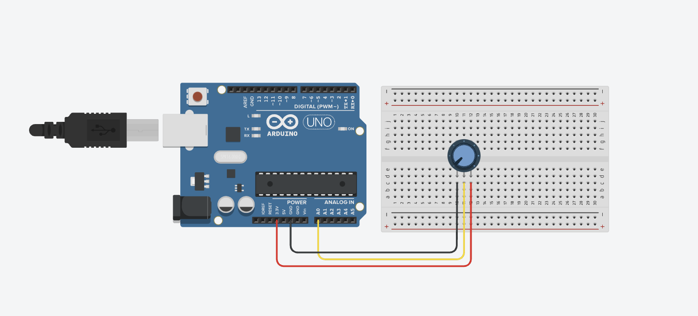

For this assignment, I decided to try and use the p5.js program to communicate between my microcontroller and my computer. The first thing I had to do was to choose what kind of input device I wanted to use. Seeing as we had, or at least tried to, gone through a tutorial using a potentiometer in class, I decided to go with that since I had the circuit already made. I had struggled to follow along with the tutorial because I kept facing errors I did not know how to fix. These included my sketch failing to connect to my websocket and being told that my sensor values were undefined. After continuing to struggle with the course website and p5 guide, I decided to try and find another route. After doing some research on youtube, I came across a very helpful tutorial by Scott Fitzgerald. Like me, he was also using a potentiometer to send data to p5.js and the visualitation of his steps made it easier to follow. Here is the potentiometer circuit that I used recreated in tinker cad. I am using the A0 Analog in pin as my sense pin and connecting the other two legs of the potentiometer to ground and 3.3 V. The tinkercad recreation uses an Arduino Uno board but I actually used an Adafruit Metro M0 Express board.
The arduino code that I used to read out the sensor values of the potentiometer is very simple and can be found on the course website, in the week 11 tab, under the Browser and USB link. To start it defines the A0 pin as the sensorPin and then makes the program run at 9600 baud since p5.js' default baud rate is that. In the loop function it simply says that the sensorValue is equal to the analogRead of the A0/sense pin. Then it Serial.write's the value which sends the data to p5.js. That's it!
const int sensorPin = A0; // analog pin A0
void setup() {
// initialize the serial port for communication
Serial.begin(9600);
}
void loop() {
// read from potentiometer
int sensorValue = analogRead(sensorPin);
// write the value to p5.js
Serial.write(sensorValue);
delay(10);
}
Once I had the arduino code complete, I had to connect to the p5 Serial Control App. You have to download this because it is what communicates directly with the index.html and sketch.js files of your p5 project. Arduino and p5 can not communicate directly and thus rely upon the app to connect them. After struggling to download the app through google Chrome due to security issues, I found that I was able to download the file through Safari. Once I had it downloaded, Apple did not allow me to open it because it was unable to check for viruses. I had to go into my security settings and manually open the file, hoping that there were no viruses. Although it was a little annoying to jump through all these hoops, it was quite easy to download the app. As soon as I opened it, all of my serial ports appeared and when I clicked the one that was being used for my Metro, a little Serial monitor appeared. I saw my potentiometer data being output which was a good sign that the Arduino IDE and the app were communicating properly.
Once I had the arduino IDE connected to the Serial control app, I started working on the actual p5.js component. First came the index.html file which creates the actual webpage canvas and introduces the necessary libraries for the sketch,js code. All in all, the code is quite simple and mainly uses script links to add libraries. The libraries I have are: the general p5 library, the serial port library, and the sketch.js library. Make sure to put the sketch.js library in the body section.
?!DOCTYPE html>
?html lang="en">
?head>
?script src="https://cdnjs.cloudflare.com/ajax/libs/p5.js/0.10.2/p5.js">?/script>
?script language="javascript" type="text/javascript" src="https://cdn.jsdelivr.net/npm/p5.serialserver@0.0.28/lib/p5.serialport.js">?/script>
?/head>
?body>
?script src="sketch.js">?/script>
?/body>
?/html>
The sketch.js code it where the p5.js product comes into shape. Since I was following a youtube tutorial and not the course website's or p5's one, I used considerably fewer Serial.events. I used the Setup, gotData, and draw events only. Before my setup event, I made the serial and lattestData variables for future use. In the setup event I created my canvas, defined serial to a new Serial.port, and made the call backs serial.open and serial.on. The serial.open call back connected the serial control app to the sketch file. After that, I have the gotData function which grabs the data from the potentiometer, turns it into a variable and sets it equal to the latestData variable we made before. Lastly, the draw function. Here I designed my canvas and visualized the potentiometer data. I made a sky blue background and used a green rectangle to create a scenary for my character to move on. I wanted to visualize my input data as a character moving across the screen and fading as if it were moving further away from us as the potentiometer value got lower. To do this I made three new variables, all mapped to the potentiometer data. They are, xpos (x-position), ypos (y-position), and opa (opacity).
let xpos = map(latestData, 0, 1023, 50, 650);
let ypos = map(latestData, 0, 1023, 370, 650);
let opa = map(latestData, 0, 1023, 0, 255);
Once I had my variables, I started to make my character. I decided to try and make a simple robot comprised of a head, body, and legs/wheels. For the head and body, I used the ellipse and rect functions. Within the four requiered parameters, I made the first two equal to xpos and ypos respectively, and the last two equal to 30. For the body, I did xpos-15 because this placed the center of the rectangle equal to the center of the circle. For the color/opacity control I used the fill command. The first 3 numbers control the color while the fourth value controls opacity, so that is where put the opa variable. In total, the body and head code look like this:
//robot
fill(240,240, 120, opa);
ellipse(xpos, ypos, 30, 30);
fill(0, 255, 255, opa);
rect(xpos-15, ypos, 30, 30);
I then made the wheel(s). I used the same functions as the head (ellipse), but changed the y-positions since I wanted them to be lower than the body and head. I did ypos+30, not -30, because adding pushes the object lower on the canvas. I then used the fill command again but with differnet colors and the same opa variable. That's it! Here's my skethc.js code:
let serial; // variable to hold an instance of the serialport library
let latestData = "waiting for data"; // for incoming serial data
function setup() {
createCanvas(700, 700);
//serial constructor
serial = new p5.SerialPort(); // make a new instance of the serialport library
serial.open('/dev/tty.usbmodem101');
//serial port to use, change to the one you use
serial.on('data', gotData);
//what to do when we get the data
}
function gotData() {
let currentString = serial.readLine(); // store the data in a variable
trim(currentString); //get rid of white space
if (!currentString) return; //if nothing than ignore
console.log(currentString);
latestData = currentString;
}
function draw() {
background(135, 206, 235);
//ground
noStroke();
fill(0, 128, 0);
rect(0, 370, width, height/2);
fill(0, 0, 0);
text(latestData, 10, 10); //print data to the sketch
let xpos = map(latestData, 0, 1023, 50, 650);
let ypos = map(latestData, 0, 1023, 370, 650);
let opa = map(latestData, 0, 1023, 0, 255);
//robot
fill(240,240, 120, opa);
ellipse(xpos, ypos, 30, 30);
fill(0, 255, 255, opa);
rect(xpos-15, ypos, 30, 30);
//wheel
fill(0, 0, 0, opa);
ellipse(xpos, ypos+30, 15, 15);
fill(255, 255, 255, opa);
ellipse(xpos, ypos+30, 8, 8);
}
Here is a link to my final p5.js project and a short video of it being used.